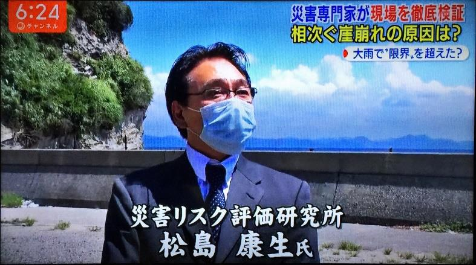
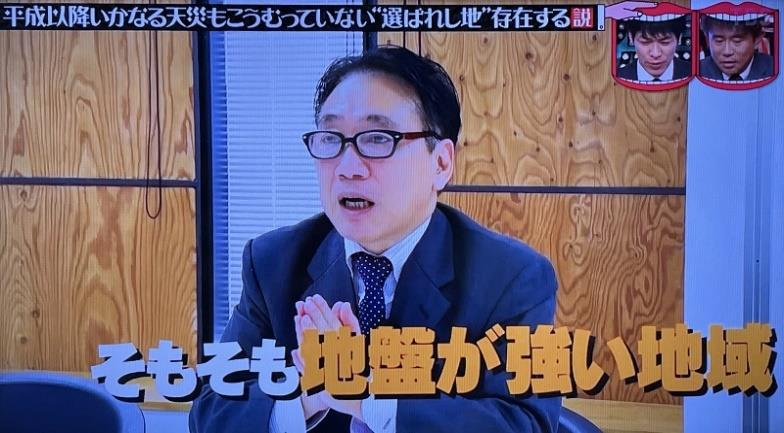
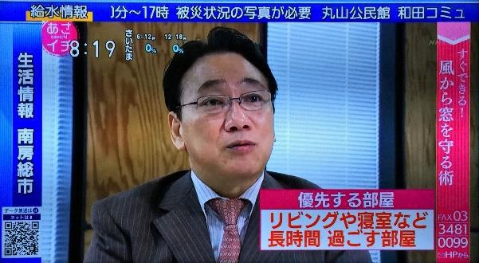

BCPを経営改善へ生かす!
売上アップにもつながったBCPの基本的な考え方から、BCPが中小企業にとってなぜ必須なのか、また、災害による間接倒産や関連倒産がなぜ発生したのか？会社と従業員を守り、リスクからビジネスを守る実践的な防災対策について解説します。また、本セミナーと合わせて、実際にBCPの策定をいただけるワークショップも開催します。この機会に是非御参加ください！
日程
◆セミナー◆
日 時：令和5年11月21日(火) 14:00～16:00
会 場：敦賀商工会館 6階ホール
受講料：無料
概要
- 防災・BCP（事業継続計画）の基本的な考え方
- 中小企業がなぜBCPが必須なのか、最大の利点とは
- リスクからビジネスを守り、BCP(事業継続計画)を売上アップにつなげた事例
- BCPを作成する上での大企業と中小企業の違い
- 使える防災対策は実効性と共に実行性の検証を
- 災害リスクと業態に合わせた防災対策とは
講師：災害リスク評価研究所 代表 松島 康生 (まつしま やすお) 氏
国や自治体向け防災コンサルタントのプロデューサーとして地震被害想定調査、ハザードマップ、地域防災計画の業務に携わり、国土交通省や文化庁の防災委員も務めた。 2011年、東日本大震災を契機に行政から民間向けにシフトし「災害リスク評価研究所」を設立。 企業や高齢者施設向けに、地震や風水害が発生した時の災害リスクを詳細に調査して、これに適した対策やBCP（事業継続計画）の支援、実践型防災教育や訓練の支援をしている。
[主な出演]
- NHK・ニュース7「台風15号・大規模停電による熱中症対策」
- TBS・水曜日のダウンタウン「天災をこうむっていない"選ばれし地"存在する説」
- テレビ朝日・スーパーJチャンネル「車での水害対策」
- 韓国ソウル放送「SBSスペシャル日本の水害対策」
- フジテレビ・めざまし8「秋田豪雨による内水氾濫」
- 日本テレビ・news zero「台風7号 都市型水害のリスクと線状降水帯」 他多数



お問い合わせ・お申し込み先